Design Director
KAIST Climate-Tech Trend Seminar, KAIST-Asan UniverCT
Soyoung Myeong
2025
KAIST Climate-Tech Trend Seminar is a lecture series featuring experts from various climate-tech fields, each speaking on a range of topics.
Using design templates provided by the Asan Foundation, I collaborated with KAIST faculty members affiliated with Asan UniverCT to design a set of six posters, ensuring visual consistency while adapting the templates to each lecture’s theme.
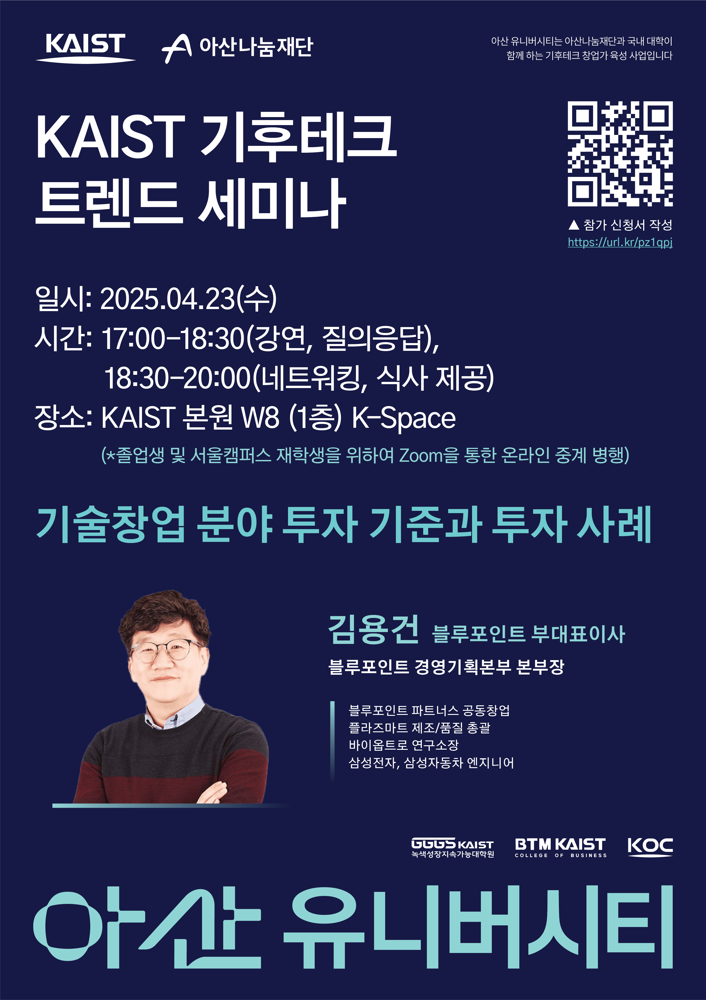
 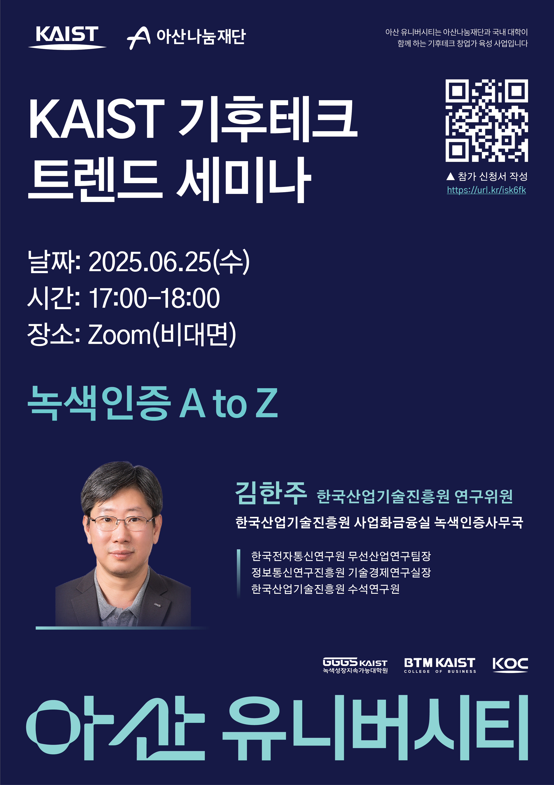
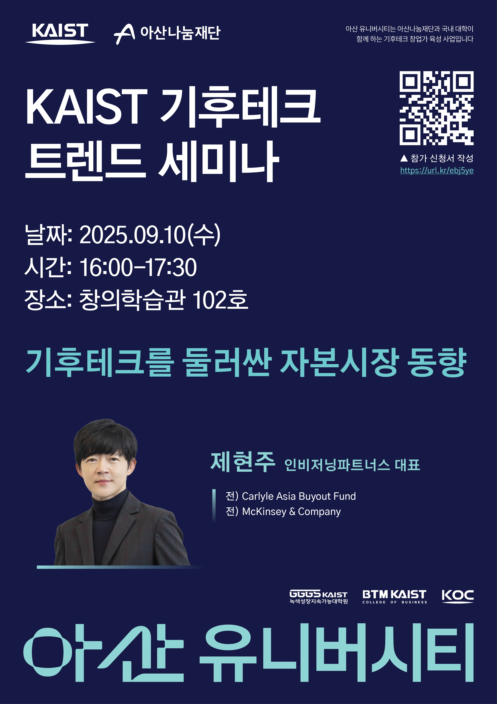
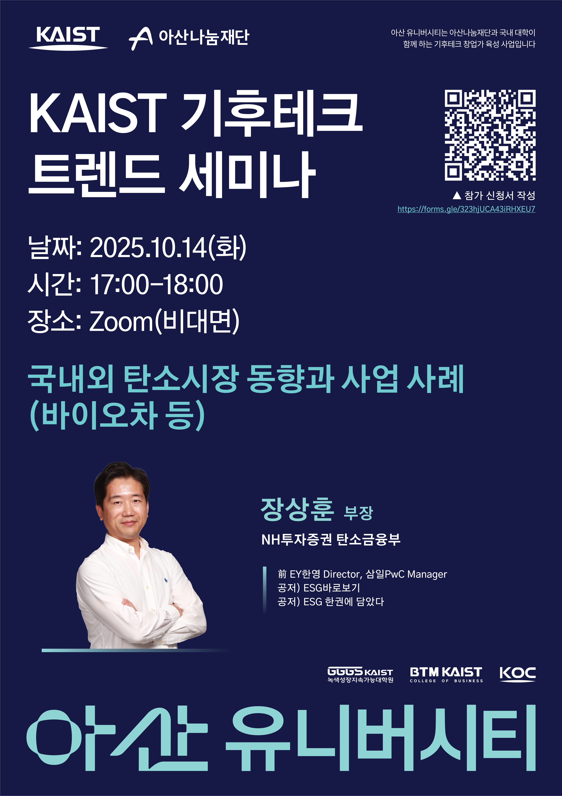
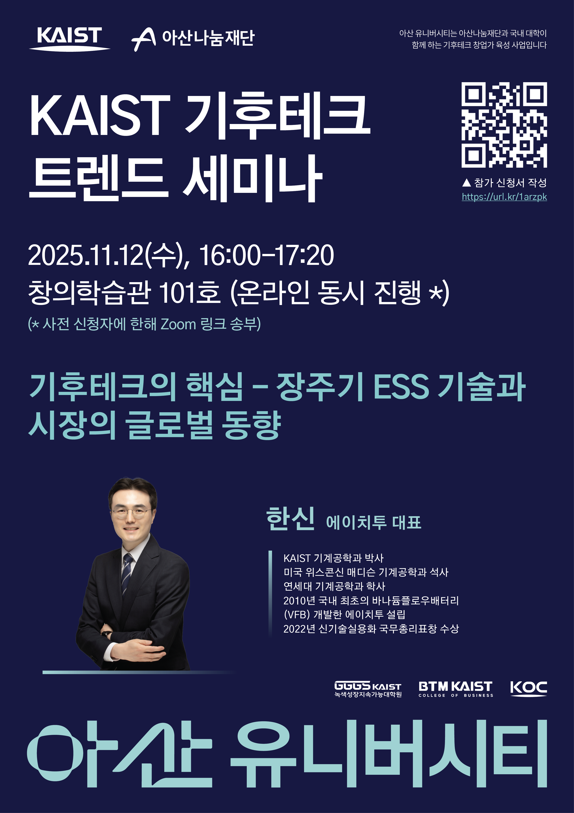
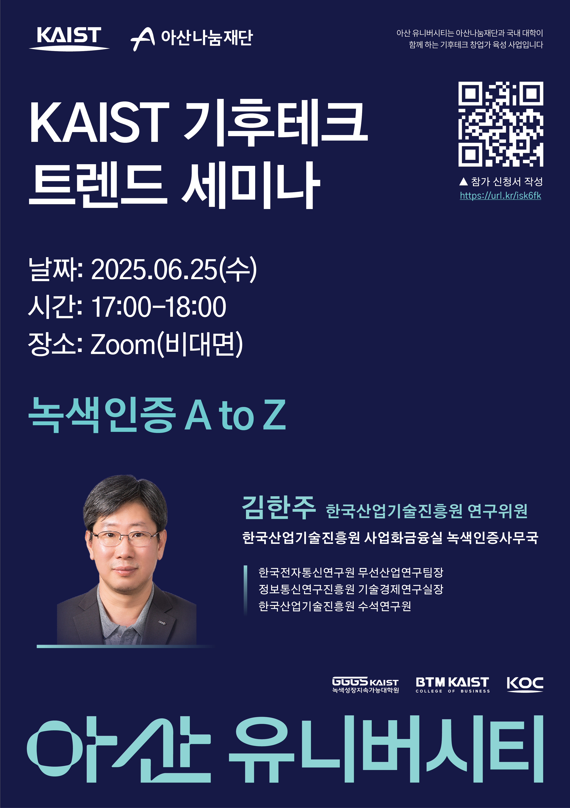
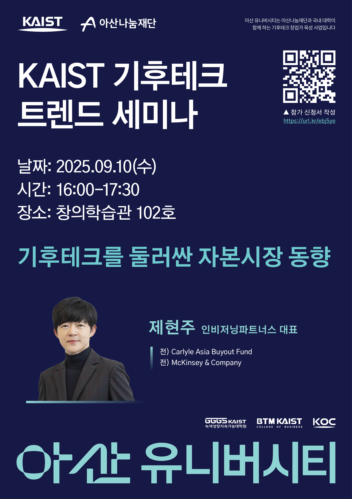
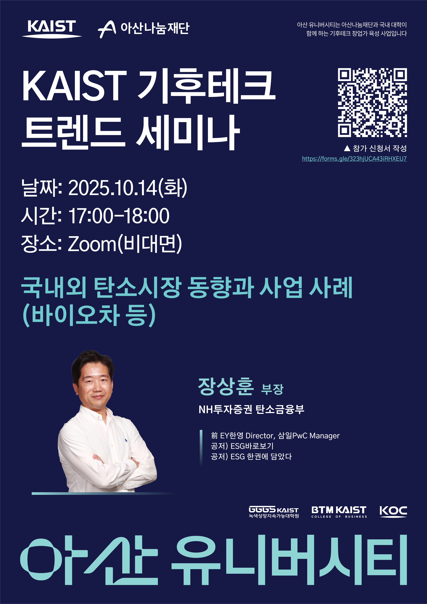
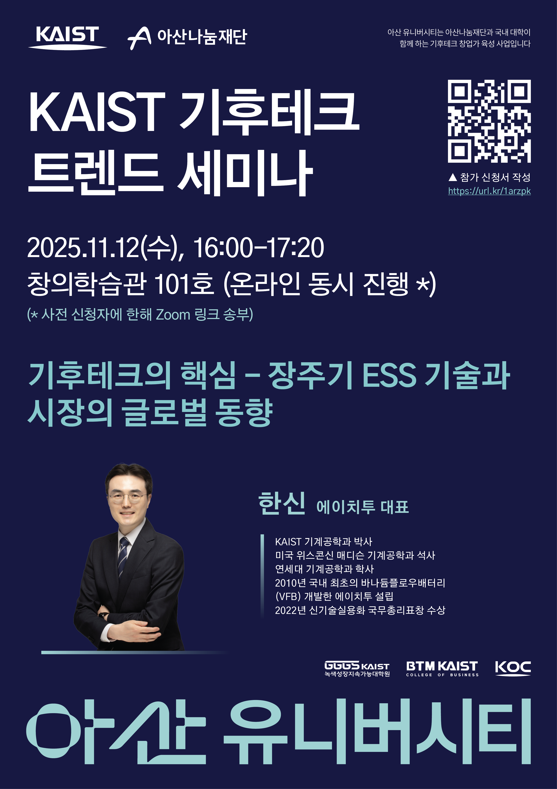
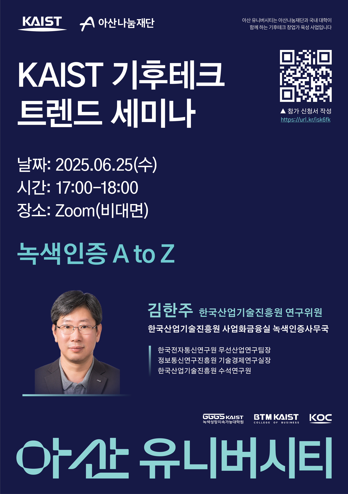
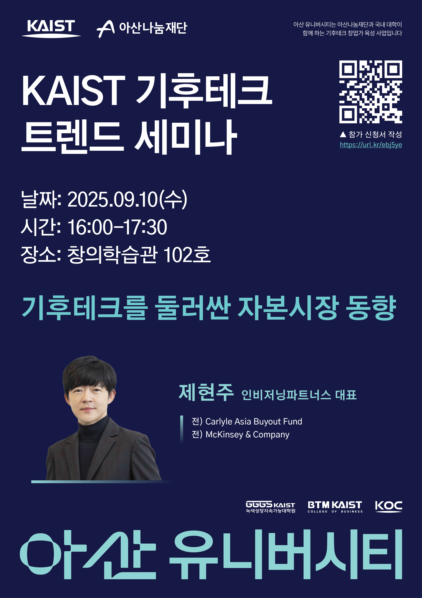
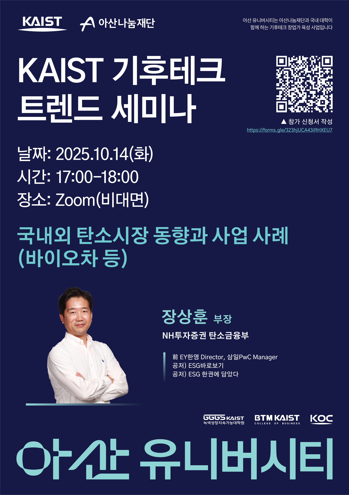
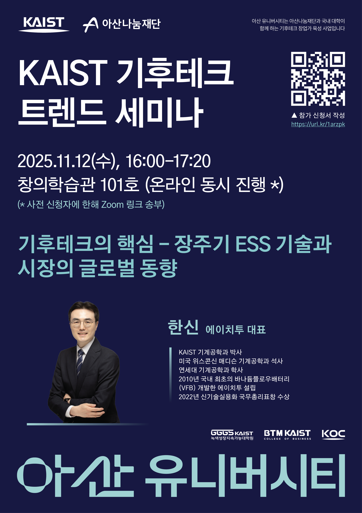